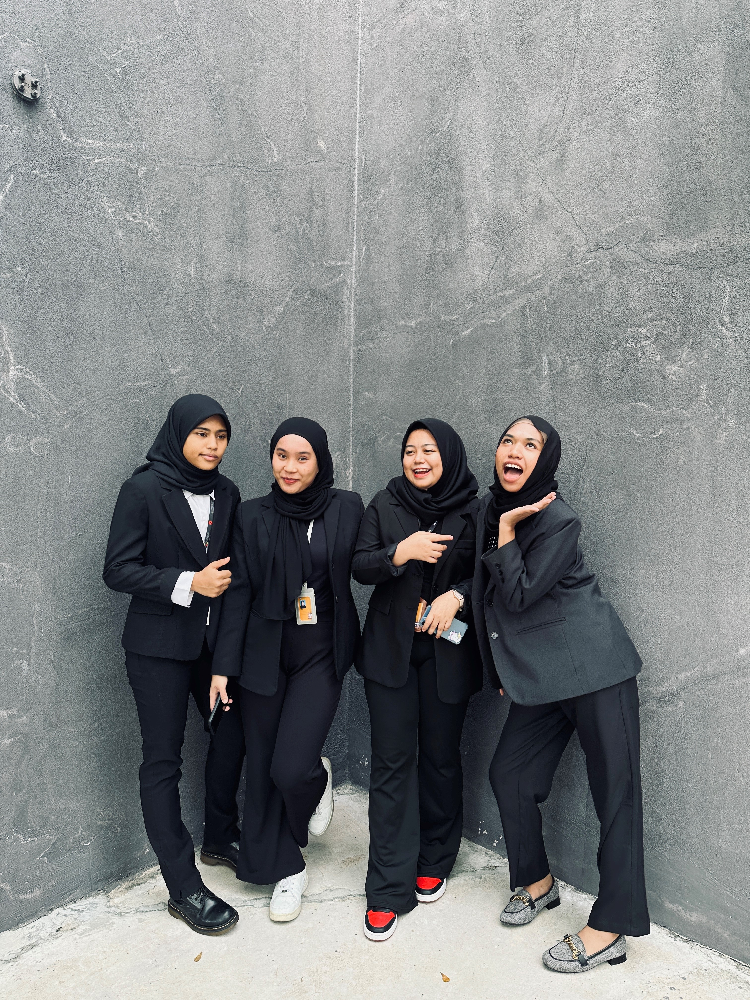
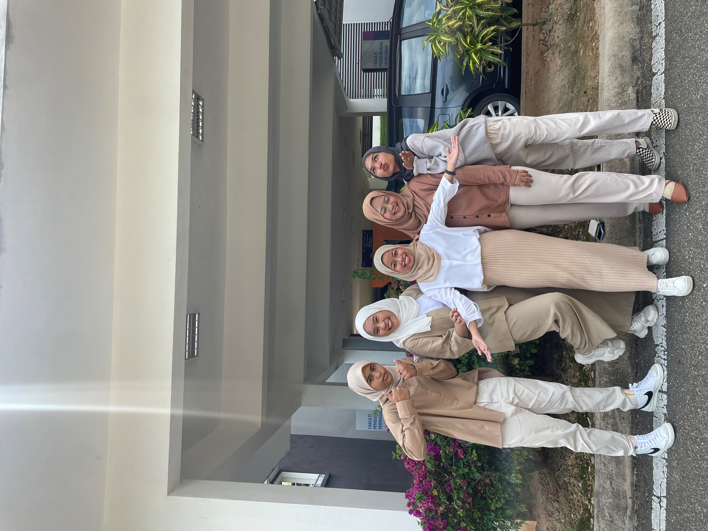

Best Circle in My Life
 This is my all time favourite bestfriends. There are always with me, almost everyday since we are classmate. I know them during my Diploma and it's been 3 years they become my friend. Started from left is Memey and then me, Sya and lastly is Atiqah. We are always in one group when doing an assignment, and luckily all of us are understanding each other which makes no conflict between us. We have a lot of memories together during diploma even though it's only one year and a half. We go for MUET exam together in Pahang, staycation in Melaka and more. I just hope this friendship never end and we always love each other.
 This is also my diploma friend and also the same person which are Memey, Sya and Atiqah, but there is include another girl named Balqis. Balqis is my housemate and she's comfortable with the four of us therefore we became a circle. We are also classmate which in N5IM1105B. Everywhere we go, we go together and create memories together before oud diploma ends. After class, we always eat together in one place everyday and that's what makes us become super close.
 Lastly, this is my childhood friend. They've been with since we were in diapers, we are neighbours and even our parents are also closed.
The girl name is Puteri and there is Wan and Azhar. We three went to the same kindergarden until high school, and that is how close we
are. It been almost 21 years old we become friends and I really hope this friendship stay until the last of my breath.
Lastly, this is my childhood friend. They've been with since we were in diapers, we are neighbours and even our parents are also closed.
The girl name is Puteri and there is Wan and Azhar. We three went to the same kindergarden until high school, and that is how close we
are. It been almost 21 years old we become friends and I really hope this friendship stay until the last of my breath.